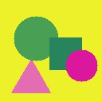
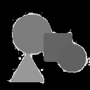
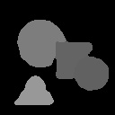
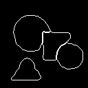
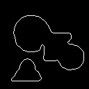
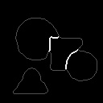
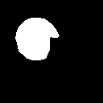
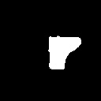
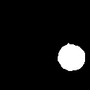
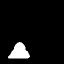

Problem Definition
The main purpose of this assignment is to analyze the images in the provided data set. More precisely, the tasks are:
For Each Image in the Data Set
- Determine the background of the image.
- Find and label shape blobs according to their colors.
- Implement the boundary following algorithm and find the contours of blobs.
- Compare the implemented algorithm with findContours provided by openCV.
- Classify the boundary pixels into three categories: against background, against another blob, against the image boundary.
- Design an algorithm to recognize blobs' shapes: square, circle, triangle.
- Evaluation the effectiveness of the recognition algorithm by using the annotation data set.
Method and Implementation
For the entire experiment, I will convert RGB color images into the grayscale ones and use them for computing because it's easier to handle 1-channel image than deal with the 3-channel image.
1. Determine the background of the image
To determine the region of the background, I need to figure out the background color in the first place. I collect the pixels on the image boundary and choose the major pixel color as a background color because the blobs rarely cover most of the image boundary in the provided data set. Then, I got the image background region.
One problem that I met is that there are noises appearing in the image where the pixel color is similar, but there are tiny little differences in the color value. This makes it hard for the computer to select the entire background area. To fix this, I used the denoising function provided by OpenCV called medianBlur, which blur the image and overwrite the small noise pixel regions with the majority of color values that surround them. Finally, I can select the entire background region and set it to zero.
The major difficulty I met for this part is that the pixel near the blobs' boundaries is sometimes not the same color is the blobs' themselves, and the computer will grab the image with part of the surrounding boundary pixels as well, which makes the contours of them very rough. To solve this, I calculated the frequency of the colors in the image and picked those with the reasonable frequency. The reason why I did that is that the majority color of the blobs is inside the blobs instead of the pixels surrounding them. So by doing that, I can drop most of the unexpected pixels on the blobs' boundaries.
For the labeling part, each color value picked previously represents one of the blobs in the image, and I can use these values to find the regions of those blobs easily. (the blob colors are unique). Additionally, I checked the size of each region as well and ignore the small size regions since there are some separated pieces that shouldn't be counted as a blob.
For this part, I used the boundary following algorithm taught in the lecture and it produces the contours perfectly. Some information of the algorithm:
find the starting point c (first pixel in the blob) -> find the N4 neighbor at the left of c named b -> start at b, go clockwise and find the next pixel in the blob -> update c, b -> repeat until finish detecting the contour
I used the cv2.findContours() and save the result in the image file (jpeg format). The cv2.findContours() works well with some of the images. However, the cv2.findContours() usually includes the contours of some small pieces inside the blobs as well, which is unnecessary for this assignment.
5. Classify the boundary pixels into three categories: against background, against another blob, against the image boundaryIt's easy to classify the pixels on the image boundary since I only need to check the index/position of them. For the contours that against another blob, however, it's harder since there are several conditions that should be considered. So, instead of doing that, I classify those against the background first. The filter condition I used is that: if the pixel gets a background color neighbor and that neighbor is part of the real background (with large region size), it belongs to the category that against the background. Finally, those that are left should belong to the category that against another blob.
6. Design an algorithm to recognize blobs' shapes: square, circle, triangle
There are some difficulties I met in this part, and the final implementation is quite different from the plan that I have. Here are several attempts that I tried but abandoned because of some specific problems:
- calculate the circularity/convexity/compactness of the blobs Problem: the blobs are usually part of the perfect shape since there are lots of overlaps. No matter if it's a circle or a triangle, the circularity/convexity/compactness of it can be significantly different from the value of the perfect shape's. Even the centroid of the blobs can be outside the blobs themselves. Making the prediction based on this might be careless.
- use the angles/degrees of the contours to classify the shapes Problem: the contours of the blobs that detected are not smooth, and there are many unexpected concaves and convexes on the blobs' contours, which makes it difficult to find the slope of the edges and calculate the degrees among them.
Both of these two measurements work well on the circle-like blobs in most cases since the similarity errors are significant for those blobs as well. However, it's still hard to determine whether a blob is a triangle or a square since most of the attributes of them are similar and the measurement of angles/degrees is difficult to implement. Assume we have more advanced contour detection or error-tolerant recognition method; the performance could be improved considerably. 7. Evaluation the effectiveness of the recognition algorithm by using the annotation data set
In this part, I used the concept of the confusion matrix and computed the Precision on my prediction results. The formula is: Precision = (TP / TP + FP)
In terms of extracting the information from the annotation files, the program grabs the relevant annotation images for the evaluation and pair the blobs that correspond with the one I got previously by checking if the pixels are paired in the same position of the image. Then, it checks if the annotation is the same as the prediction. Finally, it saves the result in a dictionary object and stores it in a txt file named Overall_Evaluation.txt.
Briefly outline the functions you created in your code to carry out the algorithmic steps you described earlier.
Experiments
The experiment is completed in Python and the Jupyter Notebook is provided in both ipynb and html format.
Results
Since there are too many trials done, I only present one of the valuable trial below.
| Original Image | |||
|---|---|---|---|
|  | |||
| Image without Background | Denoising Image | ||
|  |  | ||
| Boundary Following Algorithm | openCV drawContours | Classified Contours | |
|  |  |  | |
| Detected Blob 1 | Detected Blob 2 | Detected Blob 3 | Detected Blob 4 |
|  |  |  |  |
Discussion
Most of the functions in my program works well with the provided date set. However, there are some limitations:
- If the color differences among blobs are small, it's hard for my solution to work effectively.
- The program can handle the simply images, but there will be troubles when it occurs complex image (with many details and multi-channels).
- The size of the image in the provided data set is fixed which is used in the program. However, there will be problems if we lose this advantage.
- Better blob recognition algorithms are expected to be used to detect the contours with pixels that have differences in color values.
- Machine Learning Method maybe adoptable for this experiment to improve the performance.
Conclusions
My program effectively detected the background region, labeled every blob based on the color, accomplished the boundary following algorithm function and classified the boundaries. However, the shape recognition still needs to be improved, and some advanced methods should be used to replace the current ones even though now the program can successfully recognize some of the shapes.
Credits and Bibliography
CS 585 Lab 2 Solution - Teaching Fellow Yifu Hu
openCV: https://opencv-python-tutroals.readthedocs.io/en/latest/py_tutorials/py_tutorials.html